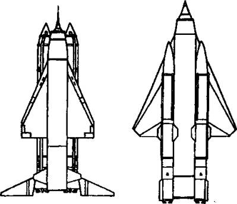
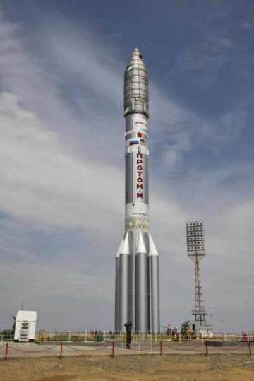

Ракеты устремляются ввысь
ЗНАМЕНИТАЯ Р-7 И ЕЕ ТРУДНОСТИ. Тем временем 13 февраля 1953 года было принято постановление правительства о создании двухступенчатой баллистической ракеты. Согласно ему, НИИ-88 приступил к работе по теме Т-1: «Теоретическое и экспериментальное исследование по созданию двухступенчатой баллистической ракеты с дальностью полета 7000–8000 км». Параллельно велась тема Т-2: «Теоретические и экспериментальные исследования по созданию двухступенчатой крылатой ракеты с большой дальностью полета».
И вот после неизбежных в таких случаях согласований 20 мая 1954 года ОКБ-1 Сергея Королева приступило к проектированию баллистической ракеты большой дальности Р-7. Задания на разработку крылатых ракет большой дальности получили ОКБ-301 Семена Лавочкина (проект «Буря») и ОКБ-23 Владимира Мясищева (проект «Буран»).
Во время разработки боевого ракетного комплекса Р-7 была официально оформлена и «большая шестерка». Теперь она называлась Советом главных конструкторов под председательством С. П. Королева.
Проектированием ЖРД, как и прежде, занимался главный конструктор ОКБ-456 Валентин Глушко. Он уже имел опыт разработки большого кислородно-керосинового двигателя РД-110. Керосин заменил применявшийся на первых баллистических ракетах этиловый спирт, вызывавший немало усмешек и нареканий начальства: «Знаем мы, куда у вас спирт утекает…»
В январе 1954 года на Совете главных конструкторов было также принято решение об использовании унифицированного ЖРД для обеих ступеней.
Конструктивно теперь ракета виделась такой. Пакет из четырех одинаковых блоков первой ступени, оснащенных ЖРД тягой по 80 т, которые симметрично располагались вокруг центральной второй ступени. После старта и выработки топлива блоки первой ступени отстреливались и ракета продолжала полет на двигателе второй ступени.
Такая компоновка заодно упростила и процесс сборки Р-7 на стартовой позиции. На пусковой стол доставляли все блоки поодиночке, а затем стыковали их со второй ступенью в двух точках — внизу (на уровне крепления двигателей) и в самой верхней точке каждого блока.
Для управления полетом ракеты решено было использовать рулевые двигатели малой тяги с поворотными камерами. На старте они включались одновременно с маршевыми двигателями и стабилизировали полет ракеты.
Вопрос об оснащении боеголовки решался в самых верхних эшелонах власти. В конце концов заместитель Председателя Совета Министров СССР Вячеслав Малышев предложил Королеву оснастить «семерку» термоядерным зарядом, испытания которого были успешно проведены на Семипалатинском полигоне. Однако, чтобы ракета подняла термоядерную бомбу, величину полезной нагрузки Р-7 нужно было увеличить с 3 до 5 т.

Межконтинентальные ракеты «Буря» и «Буран».
Конструкторам пришлось модернизировать ракету, значительно увеличив ее стартовую массу. Но при этом пришлось пересмотреть и прочностные характеристики. Тогда стало ясно, что собирать ракету в вертикальном положении будет уже невозможно. Решили монтировать все блоки в горизонтальном положении и в таком же виде транспортировать ракету из монтажного корпуса по железной дороге к стартовому столу. Здесь же не ставили ракету, а подвешивали вертикально за специальные силовые пояса.
Так у нас появилась своя, оригинальная технология сборки и транспортировки ракеты на стартовую позицию. Она в корне отличается, например, от американской, где ракета и монтировалась и транспортировалась в вертикальном положении.
ОТКУДА ЗАПУСКАТЬ? Пока конструкторы делали и переделывали ракету, встал вопрос, откуда ее запускать. Возможности полигона Капустин Яр были исчерпаны.
В 1954 году специальная комиссия под руководством Василия Вознюка, начальника полигона Капустин Яр, стала искать территорию для нового космодрома. Было перебрано множество мест, пока не остановились на четырех вариантах. Для окончательного решения были предложены пустоши на территории Марийской АССР, Дагестанской АССР, Астраханской области и Кзыл-Ординской области Казахстана, неподалеку от железнодорожной станции Тюратам.
Наиболее подходящим был признан Тюратам. Во-первых, он находился южнее других участков, а ракеты, как известно, лучше всего запускать с экватора — здесь им больше всего помогает вращение Земли. Во-вторых, Казахстан удален от наиболее населенных областей СССР, что немаловажно на случай аварии, схода ракеты с управляемой траектории. И, наконец, в-третьих, удаленность космодрома позволяла лучше оберегать его секреты от чересчур любопытных посторонних глаз.
Во всяком случае, чтобы навести лишний раз тень на плетень, будущий ракетодром даже назвали не Тюратам, а Байконур. Между тем само селение Байконур находится в нескольких десятках километров от станции Тюратам.
Теперь оставалась остановка за немногим: нужно было в кратчайшие сроки построить невиданное, грандиозное по своему размаху сооружение в местах, где привольно жилось лишь верблюдам да ящерицам, где температура летом запросто переваливала за сорок градусов жары, а зимой опускалась до минус сорока.
Однако приказ был отдан, и военные строители под командованием Георгия Шубникова в июне 1955 года приступили к делу. На строительных площадках порой работали более 10 000 человек. Строительно-монтажные работы велись зачастую в авральном режиме, иногда круглые сутки. Такой нагрузки не выдержал даже крепкий организм начальника строительства. В 1965 году он тяжело заболел, ослеп и вскоре умер. Рядовых же строителей приходилось менять каждые несколько месяцев.
Под поля падения отработавших ступеней были отведены участки в Акмолинской области. Местами падения головных частей стали участки полуострова Камчатка.
Кроме основного космодрома, два года спустя началось строительство и запасного. Он же одновременно предназначался и для боевых пусков.
Боевые стартовые комплексы поначалу предлагалось прятать в специальном гроте, вырубленном в скале. А после объявления боевой тревоги выдвигать вбок, на свободное пространство специальными механизмами. Потом этот экзотический проект заменили стартовыми шахтами, которые и построили позднее во многих местах Союза. Но для начала решили ограничиться просто прикрытием наземного стартового комплекса круговым земляным валом.

Космодром Байконур. Ракета на стартовом столе.
Разместили же все это хозяйство в архангельских лесах, неподалеку от железнодорожной станции Плесецк. Здесь и начали строить в январе 1957 года четыре боевых стартовых комплекса.
ИСПЫТАНИЯ НАЧИНАЮТСЯ. Первым начальником полигона Байконур был назначен генерал-лейтенант Алексей Нестеренко. Для проведения пусков ракет сформировали 39-ю отдельную инженерно-испытательную часть. Председателем Государственной комиссии по проведению испытаний стал Василий Рябиков. В марте 1957 года на полигоне завершили монтаж оборудования стартового комплекса. Административным центром полигона стал город Ленинск.
В начале марта 1957 года на Байконур с завода в Подлипках прибыла по железной дороге первая, разобранная на блоки ракета. А когда ее смонтировали, Государственная комиссия подписала акт о готовности первой очереди полигона к пуску.
Старт ракеты Р-7 был назначен на 15 мая 1957 года. Сначала все шло вроде нормально, но на 103-й секунде полета нарушилась герметичность магистрали горючего. После аварийного выключения двигателей ракета грохнулась на землю и развалилась на куски.
Второй пуск, намеченный на 9 июня 1957 года, не состоялся из-за выявленного в процессе подготовки к старту заводского дефекта. Третий пуск — 12 июля 1957 года — хоть и состоялся, но ракета опять развалилась вскоре после старта.
Только 21 августа 1957 года состоялся первый успешный пуск. Преодолев расстояние в 5600 км, макет боеголовки достиг цели на камчатском полигоне Кура.
ТАСС отозвалось на это событие таким сообщением: «На днях осуществлен запуск сверхдальней, межконтинентальной, многоступенчатой баллистической ракеты. Испытания ракеты прошли успешно. Они полностью подтвердили правильность расчетов и выбранной конструкции. Полет ракеты происходил на очень большой, еще до сих пор не достигнутой высоте. Пройдя в короткое время огромное расстояние, ракета попала в заданный район».
Впрочем, несмотря на победные реляции, специалисты отлично понимали, что боеготовность Р-7 оставляет желать много лучшею. В самом деле, какое это оружие, если его, как пишет Борис Черток, надо было готовить к старту почти 10 суток. И даже работая в авральном режиме, этот срок удавалось сократить не более чем вдвое.
А главное, запуск 21 августа 1957 года выявил самую серьезную проблему «семерки»: головная часть с макетом термоядерного заряда не долетела до Земли, сгорела при входе в плотные слои атмосферы. То есть, говоря попросту, вместо боевого залпа получился пшик. И тогда Совет главных конструкторов решил на время отвлечь внимание руководства страны от этой проблемы запусками геофизических и прочих научных ракет, а также искусственных спутников Земли.
Впрочем, специалисты и сами не ожидали, что эффект «отвлекающих маневров» окажется столь ошеломляющим.